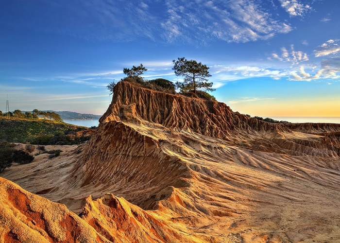
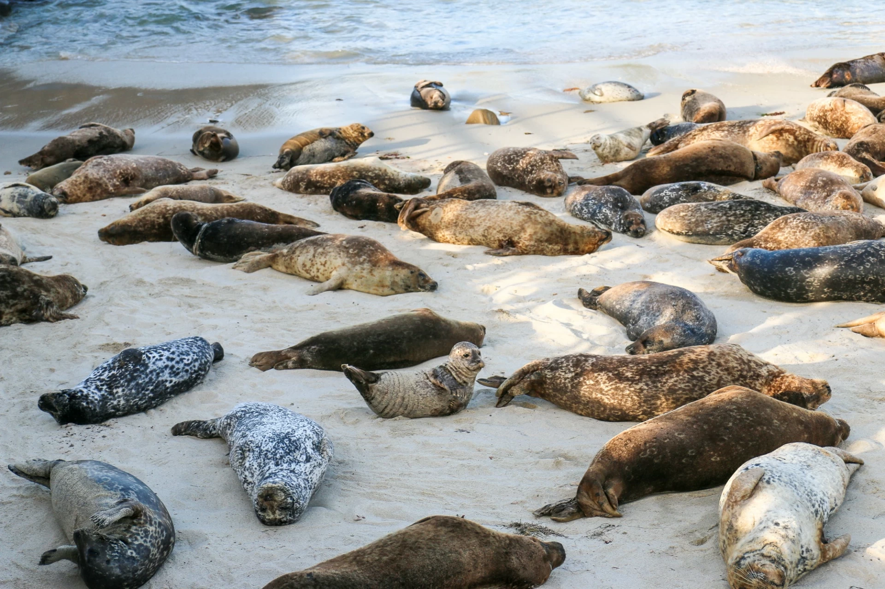
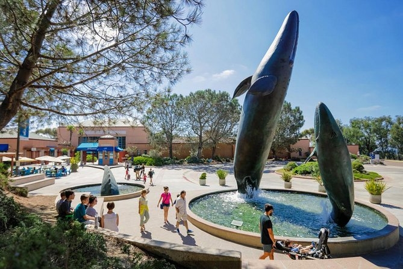
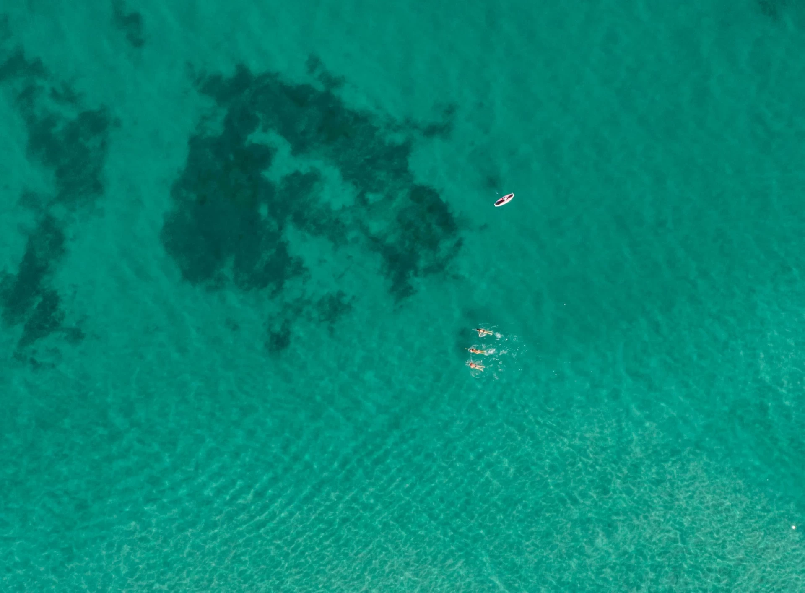
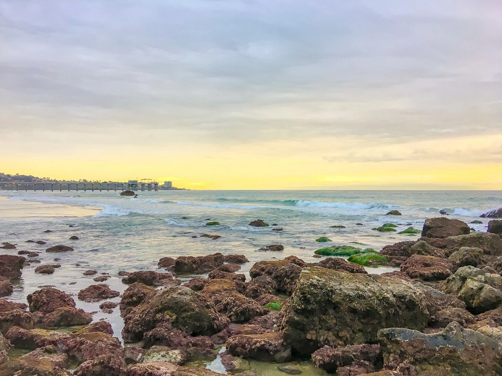

La Jolla Cove
1100 Coast Blvd, La Jolla, CA 92037
A great place to see sea lions.
Lifeguard Hours
9 a.m. to dusk
Torrey Pines State Natural Reserve

12600 N. Torrey Pines Road San Diego, CA 92037
Hours
Open daily from 7:15 a.m. to sunset
Children's Pool Beach

850 Coast Blvd, La Jolla, CA 92037
Hours
Open daily from 9 a.m. to dusk
Open to the public from June to November
Birch Aquarium

2300 Expedition Way, La Jolla, CA 92037
Hours
Open daily 9 a.m. to 5 p.m.
Underwater Park

8302 Camino Del Oro, La Jolla, CA 92037
Hours
Open 24 hours
La Jolla Shores

8200 Camino del Oro, La Jolla, CA 92037(between Vallecitos & Lee Ln)
Lifeguard Hours
9am to dusk